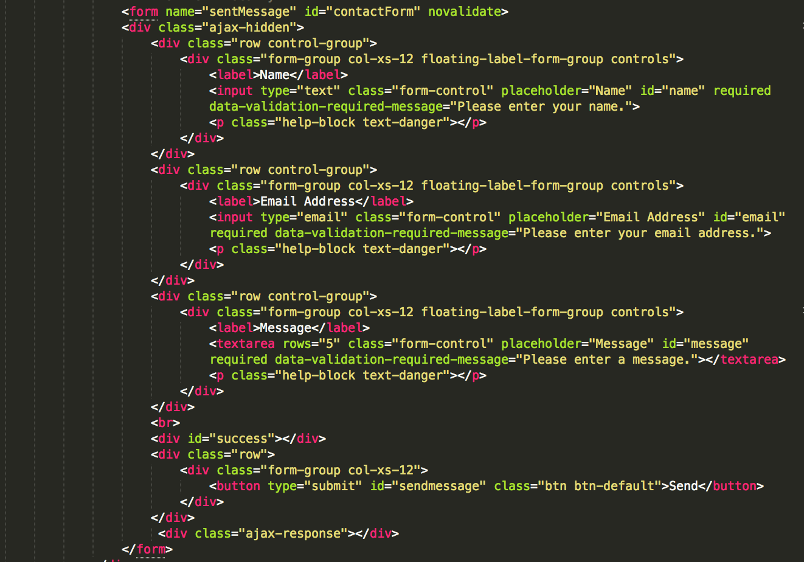
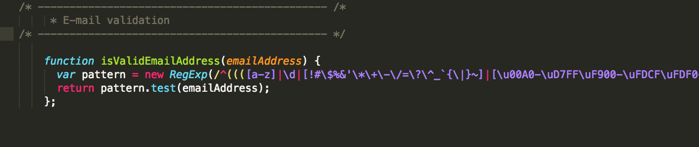
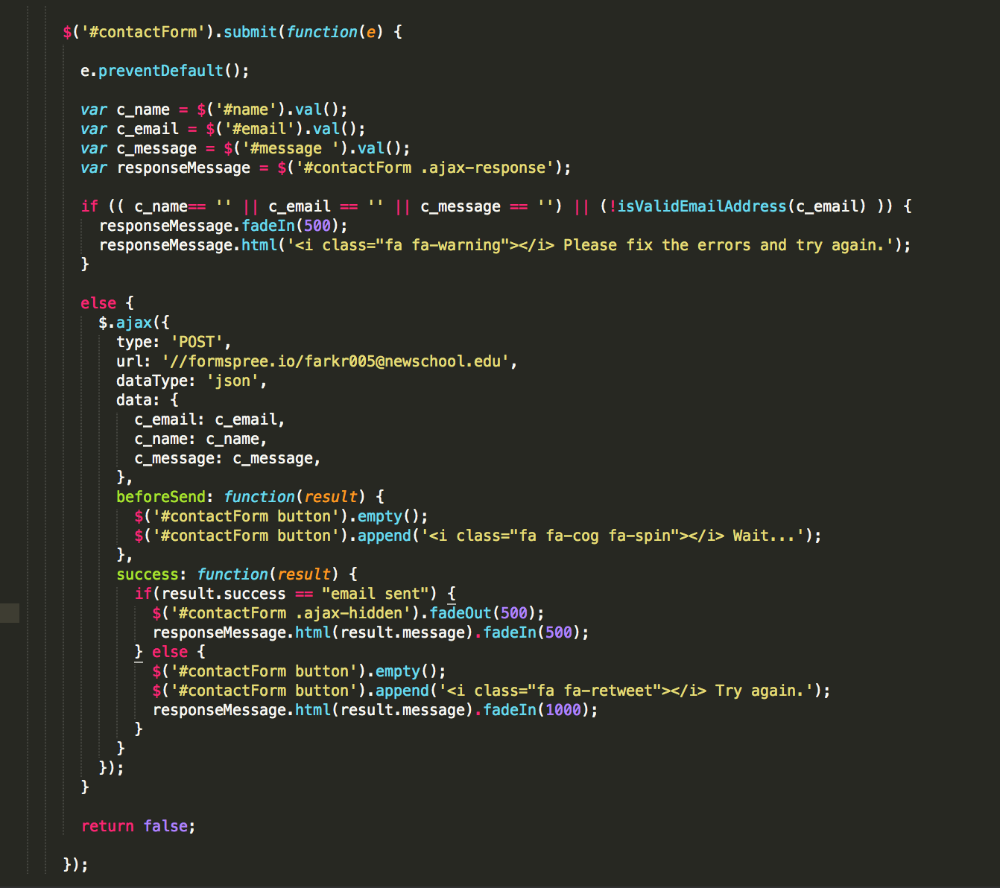

No one exists in a bubble.
As a theme for my 5 in 5 project, I wanted to explore who I am as an MFADT student. Am I a developer? creative technolgist? Artist? One of the things that makes all of these types of work possible is communication. While I was happy with the look and feel of my blog, I felt that it was limited in the sense that there was no way for readers to engage, to give feedback or ask questions.
Process
I started out my project by writing the HTML and CSS for the blog page. Having worked as a front-end developer for the 8 months prior to starting at DT, this was the area I felt most comfortable in. I used a form structure in the HTML. My goal for the CSS was to create a simple form page, that was clear and motivated the user to participate.
 Contact form HTMLGetting the Form to Work
My main resource for this form was formspree.io . This service helps you take HTML forms, collect and formatsthe JSON data before sending it to your email.
To give a higher end feel to the contact form I opted to handle some of the validation client-side using javascript, AJAX and the JQuery library.
 Email Validation Using a RegEx PatternI use the JQuery “submit” event handler to bind to the submit button on the #contatForm portion of my HTML Page. When the submit button is pushed, the contactForm executed a function I define below. The value of each form field is stored in a variable. The ajax-response is also stored.
I then use an if/else statement to validate the form’s inputs. For example I want to check that none of the variables are blank and that the email address is valid. If the form was invalidly filled out I use JQUERY to insert some html containing an error message. If all is well, a POST is sent to formspree.io, which forwards the contents of the form it to the email I provide them.  Contact Form JS/JQUERY